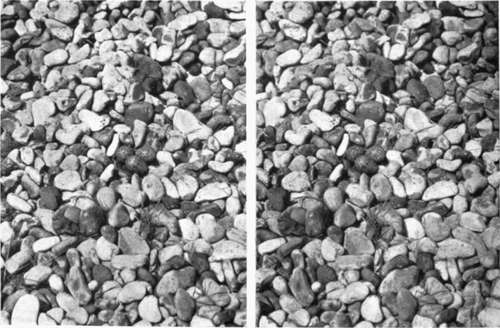

The Photography Of Insects
Description
This section is from the book "Nature Photography For Beginners", by E. J. Bedford. Also available from Amazon: Nature Photography for Beginners.
The Photography Of Insects
This branch of work, although a fascinating one, is not altogether easy on account of the small size of many of the specimens which will have to be dealt with. There is ample work to be done, however, by any one who takes an interest in the study of insect life, and every student of Nature should at least know something of the marvellous changes some insects, such as Butterflies and Moths, undergo in passing from the egg stage through those of caterpillar and chrysalis to the perfect state. To do this, a certain amount of study must be devoted to Entomology, but the beginner who wishes to take up this kind of work may be fortunate enough to have a friend who will be willing and probably pleased to help him, and who will also be able to provide him with as much material as he desires. He in his turn, if a good photographer, may often be useful to his scientific friend by photographing for him many of his more valuable and interesting finds.
Fig. 90. Kentish Plovers Eggs in situ.
The largest insects we shall be called upon to deal with in this country are the Death's-Head Moth among the Lépidop-tera, and the Stag Beetle among the Coleóptera, and these are very giants compared with some of the members of the order Insecta. Perhaps, on the whole, this is a thing to be thankful for rather than otherwise.
Butterflies and Moths and their larvae will give us a number of interesting specimens to work from, and as many species as possible should be systematically dealt with by obtaining of each one a series of photographs showing the development of it through its metamorphoses from the egg to the perfect state. During the spring the larvae of many species may be found upon their food plants. The best way to discover them is to go round the hedges and herbage in likely spots with a lantern after dark, when the majority of the larvae feed, and collect as many as required, which can be taken home and photographed at leisure. Be careful when doing this that the caterpillars are placed upon the right food plant, as it would spoil the scientific value of the photograph, however good it might be otherwise, if this were not attended to.
Instructions on rearing larvae hardly come within the scope of this book. The subject is fully treated of in The Lepidopterist's Guide, by H. Guard Knaggs, which is crammed full of information useful to the entomologist, and may be purchased for the sum of one shilling.
As most subjects of this kind will have to be done nearly or quite life size, the camera must extend to at least twice the focus of the lens used, and allowances must be made, as I have already explained in a previous chapter, for the increase of exposure required under such circumstances.
Many of the larger Beetles and the Dragonflies, Bees, Wasps, and Flies make interesting subjects also, but for many of the smaller insects the camera will require the assistance of the microscope. This branch of work cannot, however, be considered here.
Continue to:
Tags
nature, photography, art, birds, camera